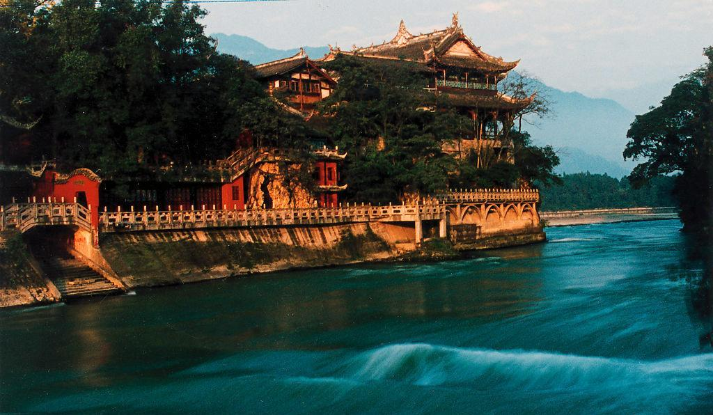
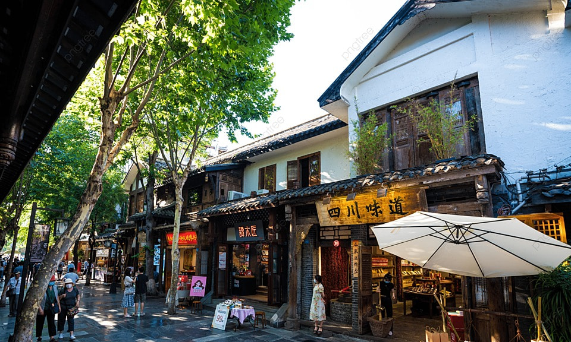
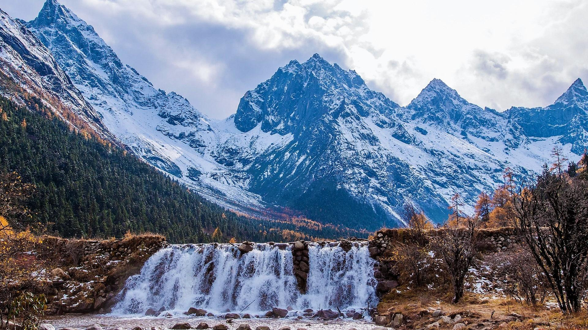

Discover Chengdu
Chengdu, the capital of Sichuan Province, is a city of ancient history, culinary excellence, and natural beauty. Known as the "Land of Abundance" for over 2,000 years, it's famous for its adorable giant pandas, spicy Sichuan cuisine, and laid-back lifestyle. The city perfectly balances its rich cultural heritage with modern urban development.
Suggested Visit Time
Recommended Duration: 3-4 days
Best Time to Visit: March to June (spring) and September to November (autumn) when the weather is mild and comfortable for exploring.

Chengdu Research Base of Giant Panda Breeding
The Chengdu Research Base of Giant Panda Breeding is the world's most famous panda sanctuary and research facility. This 150-hectare park is home to over 200 giant pandas and red pandas, where visitors can observe these adorable creatures in a natural-like environment.
The best time to visit is early in the morning when pandas are most active, eating bamboo and playing. The base also features museums, research centers, and beautiful gardens. It's a once-in-a-lifetime experience to see giant pandas up close in their natural habitat.

Jinli Ancient Street
Jinli Ancient Street is one of the oldest and most charming streets in Chengdu, dating back over 1,800 years. This pedestrian street is lined with traditional Sichuan-style architecture, red lanterns, and wooden buildings that recreate the atmosphere of ancient Shu Kingdom.
The street is famous for its traditional crafts, street performances, and authentic local snacks. Visitors can watch shadow puppetry, buy handcrafted souvenirs, and taste delicious Sichuan street food. At night, the street comes alive with beautiful lighting and a lively atmosphere.

Wuhou Shrine
Wuhou Shrine is a magnificent temple complex dedicated to Zhuge Liang, the legendary strategist of the Three Kingdoms period. Built over 1,700 years ago, it's the most famous historical site in Chengdu and a must-visit for history enthusiasts.
The shrine features beautiful traditional Chinese architecture, ancient stone carvings, and meticulously maintained gardens. The complex also houses the tomb of Liu Bei, the founder of the Shu Kingdom. Visitors can learn about the fascinating history of the Three Kingdoms period and admire the stunning architecture.

Dujiangyan Scenic Area
The Dujiangyan Scenic Area is home to the famous ancient irrigation system built over 2,200 years ago. This UNESCO World Heritage Site is one of the oldest and most advanced irrigation systems in the world, still functioning today to control floods and provide water for irrigation.
Designed by Li Bing, this incredible system tamed the turbulent Min River and transformed the region into the "Land of Abundance.

Kuanzhai Ancient Alleys
Kuanzhai Ancient Alleys, or Wide and Narrow Alleys, are a well-preserved area of traditional Qing Dynasty architecture in the heart of Chengdu. This charming historic district features three parallel alleys - Wide Alley, Narrow Alley, and Well Alley - lined with traditional courtyard houses, tea houses, restaurants, and boutique shops.
Visitors can wander through the picturesque alleys, experience authentic Sichuan tea culture in traditional tea houses, taste delicious local snacks, and admire the beautiful traditional architecture. The area comes alive at night with warm lantern lighting and a lively atmosphere, making it one of Chengdu's most popular and iconic destinations.
🏔️ Nearby High-Altitude Attractions
Chengdu is the gateway to the stunning mountain scenery of western Sichuan! These 2-4 hour day trips or overnight adventures offer breathtaking views of snow-capped mountains, pristine lakes, and Tibetan culture.
Bipenggou (毕棚沟)
📍 ~200km / 4-5 hours from ChengduA spectacular alpine valley known for its crystal-clear turquoise lakes, cascading waterfalls, snow-capped Princess Peak (女皇峰), and ancient forests. Perfect for photography, hiking, and experiencing Tibetan village culture.

Siguniang (Four Sisters Mountain 四姑娘山)
📍 ~220km / 3-4 hours from ChengduKnown as the "Oriental Alps," this stunning mountain range features four majestic peaks. The area offers incredible hiking trails, alpine meadows, and world-class climbing opportunities. A paradise for hikers and nature enthusiasts!
💡 Tip: These high-altitude areas require proper preparation. Bring warm clothing, rain gear, and consider altitude sickness precautions. Visit in May-June (flowers) or September-October (autumn colors) for the best views!
Local Food
Chengdu is the culinary capital of China, famous for its bold, spicy, and numbing Sichuan cuisine. The city's food culture is legendary, with street food stalls and restaurants serving some of the most delicious dishes in the world.

Mapo Tofu
A classic Sichuan dish, Mapo Tofu features soft tofu cubes in a spicy, numbing sauce made with fermented bean paste, chili oil, and Sichuan peppercorns. It's flavorful, aromatic, and perfectly balanced with the right amount of heat.

Sichuan Hotpot
Chengdu's most iconic culinary experience, hotpot features a bubbling pot of spicy, numbing broth where diners cook raw meats, vegetables, and noodles. The signature mala (numbing-spicy) flavor is addictive and unforgettable.

Dan Dan Noodles
A classic Sichuan noodle dish, Dan Dan Noodles feature chewy wheat noodles tossed in a spicy sauce made with chili oil, Sichuan peppercorns, sesame paste, and ground pork. The combination of flavors creates a perfect balance of spicy, savory, and nutty.

Zhong Dumplings
Named after a famous Chengdu street food vendor, Zhong Dumplings are hand-made pork dumplings served with a spicy, sweet, and savory sauce. The dumplings are tender and juicy, while the sauce provides the perfect balance of flavors.